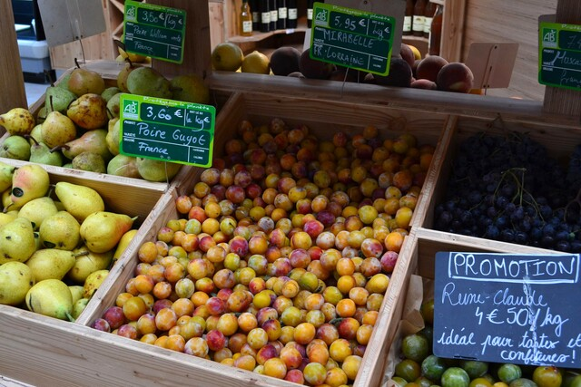
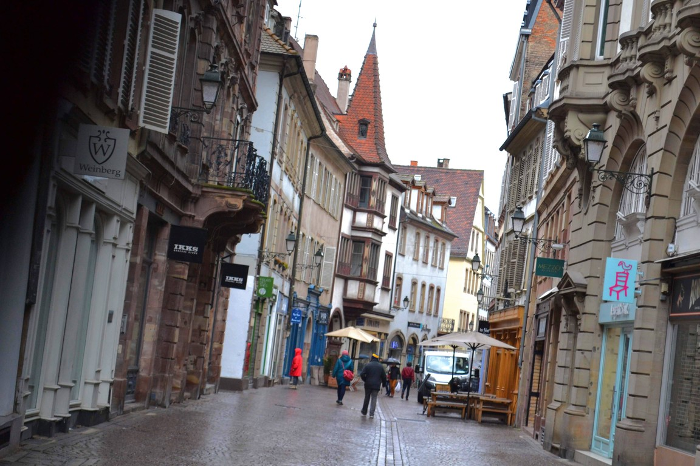

La Petit France地区の木組みの家々。アルザス地方の街並みの可愛さは抜群。
リクヴィルの村も「フランスの最も美しい村」に登録されている。 アルザス地方の絵本の風景がぎゅっと凝縮されて「完璧なメルヘンの世界」が広がっている。 コルマール周辺の村々でも、リクヴィル、ユナヴィル、エギスハイムは屈指の可愛さだと思う。
夏の終わりの太陽が花々に彩られた目抜き通りの絵画的な風景を鮮やかに照らし出す。 鎧戸とゼラニウムで彩られた窓のひとつひとつが美しい。美は細部に宿る。
ユナヴィルの村は「フランスの最も美しい村」に選ばれている。 人口600人ほどの小さな村で他の村と違って観光地化されておらずお土産屋さんさえ見かけなかったが、この村の素晴らしさはその静かな佇まいにある。 見せるために作られたのではない素朴な美しさがこの村にはある。
ユナヴィルの村は一面のぶどう畑に囲まれている。 ぶどう畑が色付く季節にもう一度訪れたい。
土曜の午前の村はひっそりと静まり返っている。古井戸の水鉢に水が滴る音があたりを包む。
リボヴィレ、ユナヴィル、リクヴィルの3つの村は徒歩移動が可能。 路線バスが非常に少ないので、リボヴィレでバスを降りてユナヴィルを通り抜けてリクヴィルまで歩いて帰りのバスに乗るか、 その逆のルートをたどるといい。 窓辺にゼラニウムの花が咲き誇る晩春〜秋か、ぶどう畑が色付く晩秋が美しい季節だと思う。
巨大なオリーブパン。これが入る窯ってどんな窯なんだ？
めちゃめちゃ可愛すぎる！！(๑＞◡＜๑) 「フランスのもっとも美しい村」に選ばれているエギスハイム村。ここはメルヘンの世界です。
かつてのドイツの影響が色濃く残るカラフルな木組みの家々が、このアルザスの地がドイツとフランスの間を何度もさまよった過去を物語る。 窓辺に咲き誇る赤とピンクのアイビーゼラニウム。 村の広場の教会のてっぺんに巣作るコウノトリ。すてきな裏路地と三叉路。 風景のどこを切り取ってもすべてが完璧に美しい。
この街は2重の市壁に囲まれている。壁の外側と内側の間に立つ鳩小屋。
石畳の路地裏に人々の生活が溶け込んでいる。
花のアルザス。
鐘楼の上のコウノトリがこの街を見守っている。
アルザスの村々はどれも可愛らしいがひとつだけ選ぶとしたらエギスハイム村だと思う。 コルマールから6kmほどの距離にある村だがバスの本数が非常に少なく行きづらい。 帰りに待っていたバスは30分待ってもなぜかやって来ず、しかたなくコルマールの街まで歩いて帰ることにしたのだが、 ふと途中でリコーの工場を見つけ、工場の前からコルマール市街地まで路線バスが出ているのを発見した。 リコーの工場からエギスハイム村までは歩いて2kmほどなので、コルマールから訪れるときはこの経路を使うといいと思う。 7番の路線バスに乗ればいい。
まるでおとぎ話のようなメルヘンな景色が広がるアルザス地方。 ずっと前から訪れてみたかったコルマールの街を訪れた。 いやー、こういう可愛いのが大好きなんですよ。 コルマールの街並みも十分すぎるほどに可愛いが若干観光の手が付きすぎているきらいがあり、 コルマール周辺のアルザスの村々もいっしょにめぐってみるのがおすすめ。
泊まったホテル。メルヘンで可愛すぎる！！！！
夏の半ばから秋の終わり頃にかけて最盛期を迎えるフルーツ・ミラベルが店の軒先に並ぶ。 この時期だけのごちそうということらしいが、個人的にはそこまでおいしいとは思えなかった。 プルーンとすももを足して2で割ったような味。

ストラスブールへはライン川対岸のドイツの街ケールから路面電車で20分ほどで行くことができる。 アルザス地方の伝統家屋が密集した旧市街地区が世界遺産に登録されている。
ところが、ドイツ側のケールに向かう電車のなかで怖いおじさんに絡まれ、 ケール駅で降りたあと逃げたりしているうちに時間がなくなってしまい、 街を落ち着いて散歩することができなかった。 フランスの治安は年々悪化の一途をたどっているがなんとかならないものか。
